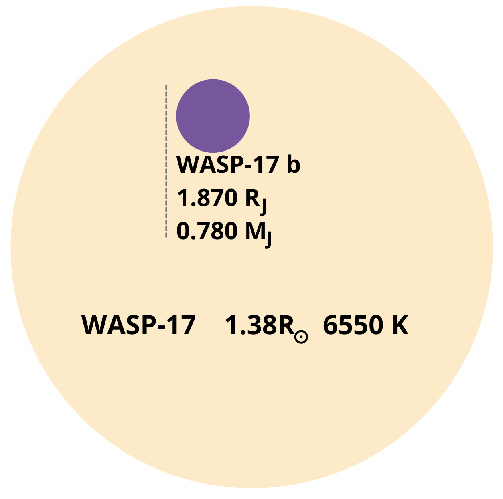
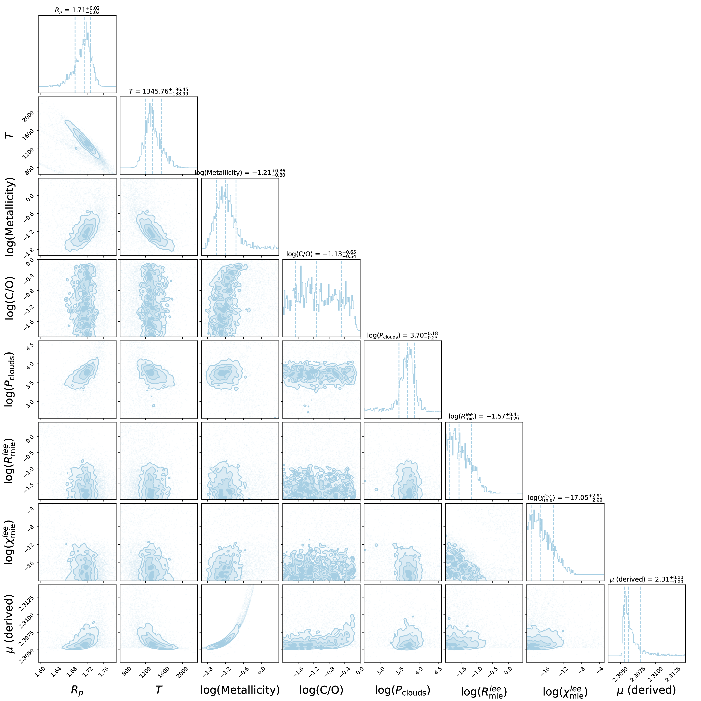

Overview of the Talk
What Are Exoplanets?
Understanding Transmission Spectroscopy
Space Telescopes in Exoplanetary Research
Data Reduction
Forward Modeling
Retrievals
Equilibrium Chemistry
Disequilibrium Chemistry
What About JWST Data?
3D effects
Machine Learning for exoplanets
Dataset generation
Part 1: Introduction
What are exoplanets?
What are exoplanets?
What are exoplanets?
What are exoplanets?
Hot Jupiter
day side
night side
Detection by transit
Credits: https://science.nasa.gov/
Detection by transit
Credits: https://science.nasa.gov/
Transmission spectroscopy
Credits: https://science.nasa.gov/
Credits: https://science.nasa.gov/
Understanding molecular features
Understanding molecular features

Wavelength (microns)
\[ \left(\frac{R_p}{R_*}\right)^2 \]
Understanding molecular features
Credits: Ariel red book, Tinetti et al. 2020
- Features appear as dips or bands in a spectrum
- Identification of molecules based on their characteristic absorption features
Understanding molecular features
1
2
H2O
CH4
- Features can overlap for some molecules
- Greater wavelength coverage is needed here
Space Telescopes in exoplanet research
Hubble Space telescope
Hubble Space telescope
Example on WASP-39b, Panek et al. 2023
James Webb Space telescope
James Webb Space telescope
Example on WASP-121b, Jaziri et al. 2024
Ariel Space telescope
Ariel Space telescope
Example on GJ 1214 b, Jaziri et al. 2024
Part 2: Methodology
Data reduction
Data reduction
- Basic corrections
- Spectrum extraction
- Systematic detrending
- Resulting datapoints
→ Iraclis code, Tsiaras et al. 2018
Raw image
Example on an observation of WASP-39b
- HST WFC3 scanning mode
- Extraction of lightcurve from the 2D image
Raw image
Example on an observation of L168-9b
- JWST MIRI instrument Low Resolution Spectrometer (LRS) in slitless mode
- Extraction of lightcurve from the 2D image
Raw image
- JWST MIRI instrument Low Resolution Spectrometer (LRS) in slitless mode
- Extraction of lightcurve from the 2D image

Example on an observation of L168-9b
White lightcurve
White lightcurve
- Limb-darkening effect
- Difference in optical depth between the center and the limb of the star
→ Calculated with Exotethys, Morello et al. 2019
Limb-darkening effect
Limb-darkening effect
Limb-darkening effect
Fitting the white light curve
- Long-term ramp
- Short-term ramps
- Scanning direction
- Radius ratio
- Mid-transit time
\[ n_\omega^{scan} = (1-r_{a1}(t-T_0)) (1-r_{b1} e^{- r_{b2} (t-t_0)}) \]
White lightcurve
White lightcurve
Spectral light-curves
Spectral light-curves
Resulting datapoints for WASP-39b
Forward Modeling
→ TauREx code, Waldmann et al. 2015, Al-Refaie et al. 2019
Input parameters: temperature
Venot et al. 2020
Input parameters
Clouds
Retrievals
→ TauREx code, Waldmann et al. 2015, Al-Refaie et al. 2019
Bayesian statistics
Uses Bayes' Theorem to update the probability of a hypothesis given evidence.
\[ P(\theta |D)= \frac{P(D|\theta)P(\theta)}{P(D)} \]
- P(θ|D): Posterior probability
- P(D|θ): Likelihood
- P(θ): Prior probability
- P(D): Marginal likelihood
Key Concepts in Bayesian Inference
- Priors: Initial belief or information about a parameter before data is observed.
- Likelihood: How probable the observed data is under a specific hypothesis.
- Posterior: Updated belief after observing the data.
- Marginal Likelihood: Overall probability of the observed data under all hypotheses.
Prior vs Posterior
The **prior** is your belief before seeing the data, and the **posterior** is the updated belief after seeing the data.

This illustrates how evidence adjusts your initial beliefs.
Evidence
\[ P(D) = \int P(D|\theta)P(\theta) d\theta \]
integral over all the information you have about a problem
Bayes factor
\[ B = \frac{P(D;M_2)}{P(D;M_1)} \]
allows us to pick which model will best describe the data
Nested Sampling
- Start with a set of random samples in the parameter space.
- Iteratively discard points with low likelihood and replace them with points of higher likelihood.
- Continue until the evidence is accurately estimated.
Credits: Buchner 2023
Visualizing Nested Sampling
Nested sampling explores higher-likelihood regions of the parameter space more effectively:

The algorithm narrows down on the high-likelihood regions.
When to Use Nested Sampling?
- When the posterior distribution is multi-modal or has complex shapes.
- When Bayesian evidence (marginal likelihood) is required for model comparison.
- Effective for problems with high-dimensional parameter spaces.
Part 3: Application to data
Study of 5 Hot Jupiters with equilibrium chemistry

The targets
The targets
The targets
The targets
The targets
The datasets
- Data reduction made with Iraclis (Tsiaras et al. 2018)
- Consistent with other reductions in the litterature
- Addition of HST STIS dataset from Sing et al. 2016
Sodium and potassium signatures
The Rossiter-Mclaughlin effect
Source: Hamacher (2008)
Sodium and potassium signatures
- Detection of Na and K questioned in HD 209458b
- Casasayas-Barris, N. et al. (2020, 2021); Morello et al. (2022)
Equilibrium chemistry
Modeling set-ups
- Free chemistry (Al-Refaie et al. 2019)
- ACE equilibrium (Agundez et al. 2012, 2020)
- Fastchem equilibrium (Stock et al. 2018)
Constant abundances, species considered : H2O, CH4, NH3, HCN, CO, CO2, Na, K, H2S, TiH, and AlO
data from NASA/CEA and the Third Millennium Thermochemical Database and includes 105 neutral species
data from NIST-JANAF database, it handles 396 neutral and 114 charged species
Results
* CH = Clouds & Hazes
From Panek et al. 2023
Results
Results
* CH = Clouds & Hazes
From Panek et al. 2023
Results
- Equilibrium chemistry is favored every time in our study
- Necessary when looking at Hot Jupiters
- the removal of Na and K impacted datapoints doesn't change the results of the retrieval
And what if there is disequilibrium chemistry?
And what if there is disequilibrium chemistry?
- Dynamics
- Photochemistry
And what if there is disequilibrium chemistry?
Full and Reduced Exoplanet Chemical Kinetics distiLLed (Al-Refaie et al. 2022)
And what if there is disequilibrium chemistry?
* CH = Clouds & Hazes
From Panek et al., in prep.
And what if there is disequilibrium chemistry?
- HST data don’t have a good enough resolution to distinguish between equilibrium and disequilibrium models
- Need better resolution and greater wavelength coverage to see disequilibrium features
What about JWST data?
What about JWST data?
- SO2 detected in multiple atmospheres
- First detection of photochemistry
- Disequilibrium is in fact observable with JWST
WASP-39b, Tsai et al. 2023
WASP-107b, Dyrek et al. 2024
What about JWST data?
- JWST public datasets
- Apply both equilibrium and disequilibrium assumption
- See if the added complexity is visible in the results
Example of WASP-17b dataset from Grant et al. 2024
Example of HD 209458b dataset from Xue et al. 2024
Conclusions
- JWST can observe disequilibrium features
- The next step is to try FRECKLL on JWST data for our targets
- Work in progress
Part 4: What are the potential limitations?
1D/3D bias
1D/3D bias
- Collaboration to characterize the bias from 3D effect
- Details in Jaziri et al. 2024
GJ 1214b, warm sub-Neptune, Teq = 600 K
HD 189733b, Hot Jupiter, Teq = 1200 K
WASP-121b, Ultra Hot Jupiter, Teq = 2400 K

1D/3D bias
- Details in Jaziri et al. 2024

1D assumption
3D assumption
Constant chemistry
Equilibrium chemistry
1D/3D bias
- Details in Jaziri et al. 2024
Bigger biases for hotter planets
Convolutional Neural Network
Convolutional Neural Network
- Effective in recognizing patterns in images and videos
- Can classify objects, detect features, and more
Convolutional Neural Network
- Input Layer: Takes the raw image as input
- Convolutional Layer: Applies filters to detect features
- Pooling Layer: Reduces the dimensionality, preserving important features.
- Fully Connected Layer: Combines features to make predictions.

The Ariel Data Challenge 2023
The Ariel Data Challenge 2023
- Preparing data from the Ariel mission
- Improving methods for analyzing data
- Enhancing integration of ML in exoplanet science
The Ariel Data Challenge 2023
Example of a result for planet 37 737
Dataset generation
Dataset generation
- Dataset for machine learning project for Universities students
- Collaboration with Orphée Faucoz (CNES) and Virginie Battista (IAP)
- Being able to determine the presence of water and/or clouds
- The targets are small and cold planets
Dataset generation
Dataset generation
Dataset generation
Dataset generation
- TauREx forward models
- Enhanced water and clouds features
- Ariel-type noise added
- 36 model per set of parameters: up to 6 552 models
Absorption %
Wavelength [µ]
What's next?
Conclusions
- Need to keep in mind 3D effects during retrieval interpretations, especialy for hotter planets
- The Ariel Data Challenge engages the scientific community to develop machine learning techniques that will be applied to the Ariel mission’s data
- Re-generating or simulating your own dataset allows for better control over the diversity and complexity of atmospheric conditions in your data
Conclusions
Conclusions
- Assuming equilibrium chemistry provides a more accurate representation of atmospheric composition compared to using constant abundances
- Disequilibrium chemistry models are not distinguishable from equilibrium models when applied to Hubble Space Telescope data
- The higher-resolution data and greater wavelength coverage from the James Webb Space Telescope may validate the superiority of disequilibrium models
- We successfully developed our datasets and initiated a machine learning model implementation
Perspectives
- Theoretical and comparative analysis of disequilibrium against equilibrium models using JWST data
- Characterize the detectability of these disequilibrium features
- Develop an extensive database encompassing various types of exoplanets and their atmospheres
- Further exploration of machine learning techniques for exoplanet atmospheric retrieval, to prepare for the Ariel mission
- A re-analysis of equilibrium chemistry in five hot Jupiters, Panek, E., Beaulieu, J.-P., Drossart, P., Venot, O., Changeat, Q., Al-Refaie, A., Gressier, A., Astronomy & Astrophysics, Volume 677, A51, 18 pp
- Adding disequilibrium chemistry in the analysis of hot Jupiters HST data, Panek, E., Bardet, D., Beaulieu, J.-P., Drossart, P., Venot, O., Changeat, Q., Al-Refaie, A., in prep.
- Transit spectroscopy : on the influence of stellar molecular lines in the retrieval of exoplanets atmospheric absorption, Drossart, P., Panek, E., Batista, V., Beaulieu, J.-P., Maillard, J.-P., 44th COSPAR Scientific Assembly. Held 16-24 July 2022, Volume 565, Abstract B6.1-0007-22
- ARES VI: Are 1D retrieval models accurate enough to characterize exo-atmospheres with transmission spectroscopy in the era of JWST and Ariel?, Jaziri, A. Y., Pluriel, W., Bocchieri, A., Panek, E., Teinturier, L., Ivanova, A., Rektsini, N. E., Drossart, P., Beaulieu, J.-P., Falco, A., Leconte, J., Mugnai, L. V., Venot, O., Astronomy & Astrophysics, Volume 684, A25, 38pp
- Data availability and requirements relevant for the Ariel space mission and other exoplanet atmosphere applications, Chubb, K., Robert, S., Sousa-Silva, C., Yurchenko, S., Allard, N., Boudon, V., Buldyreva, J., Butel, B., Coustenis, A., Foltynowicz, A., Gordon, I., Hargreaves, R. J., Helling, C., Hill, C., Hrodmarsson, H. R., Karman, T., Lecoq-Molinos, H., Migliorini, A., Rey, M., Richard, C., Sadiek, I., Schmidt, F., Sokolov, A., Stefani, S., Tennyson, J., Venot, O., Wright, S. O. M., Arenales-Lope, R., Barstow, J. K., Bocchieri, A., Carrasco, N., Dubey, D., Egorov, O., Garcia Munoz, A., Gharib-Nezhad, E., Gkouvelis, L., Grubel, G., Irwin, P., Knizek, A., Konings, T., Lewis, D. A., Lodge, M. G., Ma, S., Martins, Z., Molaverdikhani, K., Morello, G., Nikitin, A., Panek, E., Rengel, M., Rinaldi, G., Skinner, J. W., Tinetti, G., van Kampen, T., Yang, J., Zingales, T., accepted, RAS Techniques and Instruments
- Breaking degeneracies in exoplanetary parameters through self-consistent atmosphere-interior modelling, C. Wilkinson, B. Charnay, S. Mazevet, A.-M. Lagrange, A. Chomez, V. Squicciarini, E. Panek, J. Mazoyer, in revision, Astronomy & Astrophysics
- Exploration of 25 hot jupiters atmosphere using disequilibrium chemistry, Bardet, D., Changeat, Q., Panek, E., Al-Refaie, A., Venot, O., in prep
- Machine learning review for exoplanets atmospheres in the context of Ariel, Yip, G., Batista, V., Drossart, P., Falco, A., Faucoz, O., Matchev, K., Matcheva, K., Pagliaro, L., Panek, E., Zingales, T., in prep
- Impact of the consideration of stellar molecular lines in Bayesian inference atmospheric analysis, Drossart, P., Chiavassa, A., Panek, E., Broggi, M., Batista, V., Beaulieu, J.-P., Maillard, J.-P., in prep
Back-up slides
Details TauREx results
HAT-P-12b
HD 209458 b
WASP-6b
WASP-17b
Stellar effects